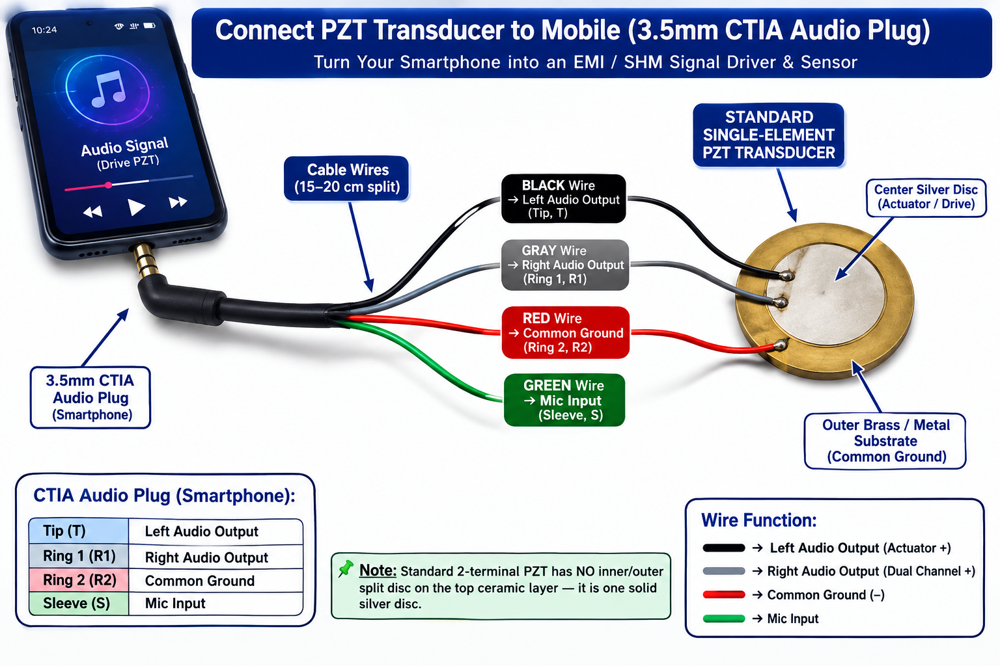
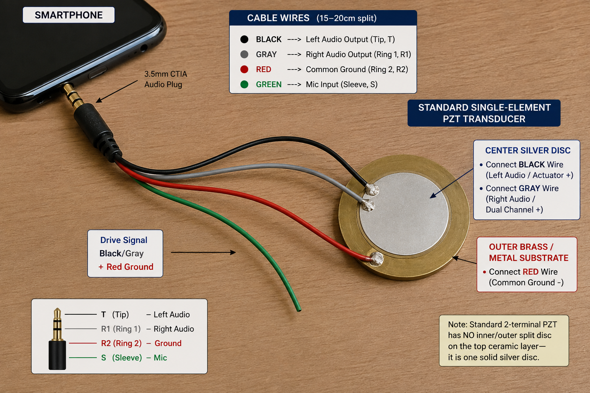

Figure 1: Dual-Agent Autonomous Structural Health Monitoring Setup on a Bonded PZT Beam Assembly.
|
Agent 1: Virat
Phone 1 — Excitation & Analysis
|
Agent 2: Robin
Phone 2 — Sensing & Data Export
|
Tips for Connecting PZT to Mobile
A practical guide for connecting a standard single-element PZT transducer to a smartphone through a 3.5 mm CTIA/TRRS interface.
⚠️ Important: Verify the Wire Colour Code Before Adoption
The CTIA connector pin functions are standardized, but the actual internal wire colours of inexpensive TRRS cables are not universally standardized.
Therefore, do not assume that Black = Left, Gray = Right, Red = Ground and Green = Mic for every cable.
Identify each conductor by continuity testing against the actual plug contact before soldering the PZT.
Verified 3.5 mm CTIA / TRRS Pin Functions
| Plug Contact | CTIA Function | Recommended Role |
|---|---|---|
| Tip (T) | Left Audio Output | PZT drive signal — use one channel |
| Ring 1 (R1) | Right Audio Output | Normally leave unused for a single-channel PZT drive |
| Ring 2 (R2) | Common Ground | Connect to PZT metal substrate / return electrode |
| Sleeve (S) | Microphone Input | Leave unused unless a sensing circuit is specifically designed |
✅ Recommended Single-PZT Connection
- Connect ONE audio output (for example, Tip / Left) to the PZT centre electrode.
- Connect CTIA Ground (R2) to the PZT outer metal substrate / return electrode.
- Do not directly tie Left and Right smartphone outputs together on the same PZT electrode.
- The microphone conductor should not be connected to the PZT unless a dedicated sensing/interface circuit is being used.
- Verify the connector pinout with a multimeter before final soldering.
⚠️ Hardware Execution Steps
- Identify the connector: Confirm that the plug is a 4-contact TRRS connector and determine whether the device follows CTIA or another pinout.
- Verify each conductor: Use continuity testing to map the actual cable wires to Tip, Ring 1, Ring 2 and Sleeve.
- Connect the drive signal: Use one audio channel to drive the PZT centre electrode.
- Connect the return: Connect the CTIA ground conductor to the PZT metal substrate / return electrode.
- Leave the unused conductors isolated: Do not allow unused audio or microphone conductors to touch the PZT terminals.
- Test at low signal level first: Begin with a low-amplitude audio/sweep signal and confirm the PZT response before increasing the excitation level.
Tips for Connecting PZT to Mobile
Visual reference examples for the practical PZT-to-mobile connection. Always verify the actual cable colour mapping before construction.

